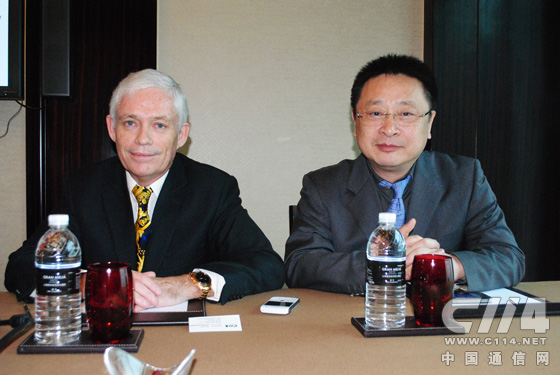

Aruba：BYOD现象蔓延助力增长 WiFi将与无线蜂窝平分秋色
2012-03-27
BYOD（Bring Your Own Device），这是一个新鲜的概念，也是一种新的办公模式发展潮流，随着智能手机、平板电脑的普及与应用，越来越多的人模糊了工作和个人生活的界限。 BYOD指的是携带自己的设备办公的现象，而且这一现象正在大规模扩展。
BYOD的基础是性能良好的企业无线局域网，这对相关企业来说又是一次乘势而上的大好机会，比如无线及移动安全解决方案厂商Aruba Networks（以下简称Aruba）。
BYOD现象势不可挡
可以说，BYOD现象的蔓延是移动互联网盛行的必然结果，当越来越多的用户利用智能手机、平板电脑查收邮件、沟通工作时，这些终端越来越多的承担起“事务处理工具”的角色。
市场研究机构IDC的数据显示，全球范围内，有46%的企业对BOYD持接受态度。企业和机构中有85%看到员工在工作中使用自己的智能手机、平板电脑或者笔记本电脑，理由是使用自己的设备可以获得钟爱的应用体验，提升工作效率。79%的终端支持WiFi、语音和视频应用。在中国市场，企业支持BYOD的比例高达79%。

Aruba亚太及日本地区副总裁Gary Jackson(左)和Aruba中国分公司总裁徐涌(右)
Aruba亚太及日本地区副总裁Gary Jackson认为，BYOD现象日益盛行的原因可以总结为以下几点：
对企业来说，由于员工自带设备，大大降低了IT硬件和相关的支持成本。对员工个人来说，使用自己最熟悉的设备工作，可以提高工作效率。员工还可以视个人情况，以下更快的速度换用最新设备。对企业的IT部门人员来说，员工携带自己熟悉的设备工作、自助服务，减轻了很多支持类、咨询类的工作负担。
当然，事物总有另一面，BYOD也存在着很多风险，比如说终端种类多样化，企业的IT部门需要配置多种组件以支持各类设备的接入，比如非标准化的设备可能携带恶意软件，带入到企业网络上。而且多样化的终端也带来了管理上的难度。眼下，大部分的产品都无法提供整合有线、无线、VPN架构，同时支持员工、访客等各类自带设备的融合解决方案。
虽然有着这样那样的不足，BYOD现象却有着势不可挡的盛行趋势。对企业来说，只有去应对，Gary称，Aruba专注于研究BYOD带来的影响，推出的Clearpass解决方案专注于化解当前方案的不足，详情点击：Aruba推ClearPass管理系统 助企业尽享BYOD优势
Aruba的主要粮仓
Aruba相信，BYOD现象的蔓延是促进企业提升无线局域网性能的主要推动力。而企业无线局域网可谓Aruba的主要粮仓。
近几年无线局域网的迅速普及和快速发展，使这家成立于2002年专注于企业无线局域网的美国企业，增长态势犹如乘风破浪。Aruba被Dell'Oro、Gartner、IDC以及Infonetics评为世界第二大企业无线局域网络供应商，次于思科。报告称，稳定出货和收入增长巩固了Aruba市场占有率第二的位置，并将进一步拉开与其他竞争者的差距。
Aruba 2011财年总收入达到3.965亿美元，增长率达49%，在市场研究机构Gartner的魔力象限中，连续三年被列入领导者象限，全球拥有两万家客户，且市场份额仍然在不断增长。
Aruba中国分公司总裁徐涌说：“我们专注于安全和移动，思科当然还是一名强大的竞争对手，他们有着先发优势和品牌效应，但我们的专注点不同。”
在思科、惠普、Juniper等巨头面前，Gary强调的是Aruba对移动和安全的专注，在管理平台方面跨平台、架构的策略，对有线、无线、VPN接入等多种架构的整合。
的确，融合和开放在今天的移动行业，被很多企业视作致胜的宝剑。
WiFi将与无线蜂窝技术平分秋色
Aruba受益于无线局域网的迅速普及，对其未来的增长前景也非常看好。业内人士普遍将WiFi视作无线蜂窝网络的补充，不过徐涌则认为，在未来的无线网络架构中，WiFi将与无线蜂窝技术平分秋色。
在记者提及WiFi的认证、干扰、覆盖范围等多个不足时，Aruba技术总监梁益民以SDH与以太网的市场竞争给予了解释：技术的先进性不是决定市场成败的主要因素。
首先从成本上来说，只有人人都能负担得起的宽带才能大范围普及。从目前的部署成本来看，利用3G技术部署一个基站的成本在4万人民币，而WiFi需要2千人民币。另外最重要的一点，目前上市的大多数终端都支持WiFi，而终端支持是驱动市场需求的最有力因素。
徐涌同时提到了物联网发展对WiFi增长的促进作用，他认为，以后物联网的很大一部分应用是视频监控和数据传输，尤其在一些边远地区的恶劣环境下，无线网络将承担主要角色。他说，今天数据流量的爆炸性增长已经超过了无线蜂窝网络更新换代的速度，如果仅依靠无线蜂窝技术，会让运营商的投入成本难以承受。正是这些原因，Aruba收购了室外Mesh供应商阿德利亚科技公司（Azalea Networks），后者多款Mesh产品，可用于物流、制造、石化、公共安全、智能电网和运输领域的关键室外工业应用。
他认为，WiFi和无线蜂窝技术着重的应用场景不同，WiFi专注于数据传输、无线蜂窝着重于无处不在的信号覆盖，两大技术将成为未来无线网络架构中的主要角色。